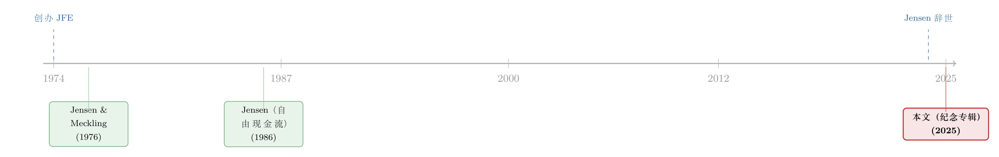

送别迈克尔·詹森：一个相信市场、却毕生研究市场失灵的人
本文读的是 Journal of Financial Economics 编辑部 (2025, JFE) 为纪念其创刊人 Michael C. Jensen 而出的专辑导言（Honoring Michael C. Jensen）：Jensen 于 2024 年 4 月 2 日辞世，享年 84 岁；JFE 用一期五篇文章，沿着他的学术生命线，从有效市场、到代理成本、到自由现金流，重新丈量了他留给金融学的版图。这篇短文借这期专辑，讲一个贯穿 Jensen 一生的张力：他是最坚定相信「市场有效」的人之一，却又亲手建起了一整套解释「企业内部为何低效」的理论。
1 一个人，和他亲手创办的期刊
2024 年 4 月 2 日，Michael C. Jensen 去世，享年 84 岁。
这本来是一则普通的讣告。但有意思的地方在于：发布这则讣告、并郑重为他出一期纪念专辑的，正是他自己在 1974 年一手创办的期刊——Journal of Financial Economics（下称 JFE）。当年他与 Eugene Fama、Robert C. Merton 合伙创刊，并从 1974 年一直担任执行主编到 1997 年。短短几年，他就把这本杂志做成了金融经济学领域排名最靠前的期刊之一，至今未变。
于是出现了一个略带宿命感的画面：一个人创办了一座「殿堂」，几十年后，这座殿堂为他立碑。JFE 这期专辑用了五篇文章，第一篇是对 Jensen 整个职业生涯的总览，随后四篇按时间顺序，逐一评估他几项最关键的科学贡献。作者阵容堪称豪华：
- René M. Stulz 总览 Jensen 的整个生涯，评估他对金融经济学贡献的性质与体量；
- Eugene Fama 与 Kenneth French（Fama 正是 Jensen 在芝加哥大学的博士导师）回到 Jensen 早期在资产定价与有效市场假说 (efficient markets hypothesis, EMH) 上的工作；
- Patrick Bolton 在公司金融理论演进的脉络里，评价 Jensen 被引用最多的那篇文章——1976 年与 William H. Meckling 合著、发表在 JFE 上的 Theory of the firm: Managerial behavior, agency costs and ownership structure；
- Yueran Ma 与 Andrei Shleifer 评估 Jensen 的工作如何重塑了我们对公司治理 (corporate governance) 的理解；
- Harry DeAngelo、Kathleen Kahle 与 Douglas J. Skinner 评价他被引用第二多的那篇——1986 年关于自由现金流代理成本 (agency costs of free cash flow) 的分析。
这五篇文章，像五盏从不同角度打过来的灯。但如果只是逐篇复述「Stulz 说了什么、Bolton 说了什么」，那就辜负了这期专辑真正的看点。所以，本文不打算面面俱到。我想抓住一条更深的线索——一条贯穿 Jensen 一生、甚至在他身上构成内在张力的线索，然后把它讲透。
2 这条线索：相信市场的人，为什么要研究市场失灵？
先把这个张力摆到台面上。
Jensen 学术生涯的前半段，是有效市场假说最坚定的旗手之一。EMH 的核心主张极其朴素也极其大胆：金融市场会把所有可得的信息迅速、无偏地反映到价格里，所以你无法靠公开信息持续地「跑赢市场」。这是一个对市场理性的近乎信仰式的肯定。
可是 Jensen 学术生涯的后半段——也是让他被引用上万次、真正名垂青史的那部分——讲的却是另一个故事：企业内部充满了低效。经理人不是你想象中那个尽心尽力为股东打工的代理人；他会盖自己的「帝国」、会乱花本该分给股东的现金、会为了私利而背离公司价值。这就是代理成本理论。
于是问题来了：一个相信「市场会无情地纠正一切错误定价」的人，怎么会同时认为「企业内部可以长期地、系统地浪费资源」？这两套世界观，难道不矛盾吗？
这正是读懂 Jensen 的钥匙。他从未认为这两者矛盾——恰恰相反，他认为它们是同一枚硬币的两面。 市场之所以「有效」，针对的是证券价格如何吸收信息；而代理成本之所以「存在」，针对的是资源在企业内部如何被配置。前者是外部资本市场的事，后者是公司围墙之内的事。真正把两者缝合起来的，是一个 Jensen 反复强调的机制：公司控制权市场 (the market for corporate control)。
换句话说：外部市场是高效的裁判，企业内部却可能是低效的赛场；而当内部低效到一定程度，高效的外部市场就会通过敌意收购、杠杆收购这些手段，强行「换掉教练」。这一机制，把「市场有效」和「内部低效」严丝合缝地接在了一起。
下面，我们就沿着这条线，一步步走过 Jensen 的几个里程碑。
3 起点：有效市场，和那个以他命名的 alpha
首先，要从 Fama 与 French 负责的那篇说起——Jensen 的早期工作，集中在资产定价与有效市场。
这里有一个绕不开的小公式。要检验「基金经理到底有没有真本事」，Jensen 早年提出的做法是：把基金的超额收益，回归到市场的超额收益上，看看截距项是否显著为正。这个截距，后来就被整个行业称为 Jensen's alpha：
$$ R_{it} - R_{ft} = \alpha_i + \beta_i\,(R_{Mt} - R_{ft}) + \varepsilon_{it} $$
这里 \(R_{it}\) 是基金 \(i\) 在 \(t\) 期的收益，\(R_{ft}\) 是无风险利率，\(R_{Mt}\) 是市场组合收益。如果一个基金经理真有选股能力，那么在剥离了市场风险敞口 \(\beta_i\) 之后，仍应剩下一块正的 \(\alpha_i\)。Jensen 当年的发现却相当扫兴：在扣除费用后，基金作为一个整体并没有显著为正的 alpha。换句话说，主动管理平均而言并没有为投资者创造价值——这恰恰是 EMH 最有力的实证脚注之一。
这个结论历经半个多世纪，依然是衡量基金业绩的基准框架（关于主动基金与晨星评级的现实图景，可参见《Mutual Fund》）。而把「资产定价的中心议题」从「收益」彻底转向「贴现率」的那条长河，也正是从这一代人对市场有效性的追问中流出的（这一脉络的现代回响，可参见《贴现率：资产定价的中心议题》）。
接着，一个自然的问题是：如果市场如此有效，能无情地给经理人的业绩打分，那企业内部还会有什么问题？Jensen 的回答，构成了他学术生涯的转折。
4 转折：把「企业」这个黑箱拆开
然后，是 Bolton 负责评述的那篇——1976 年的 Theory of the firm，Jensen 与 Meckling 合著，发在 JFE 上，是他被引用最多的作品，也是整个经济学被引用最多的论文之一。
在它之前，经济学里的「企业」基本是一个黑箱：投入要素，产出产品，追求利润最大化。但 Jensen 与 Meckling 问了一个看似幼稚、却极其要命的问题：企业里那个「追求最大化」的，到底是谁？ 是股东吗？可日常决策是经理人做的。是经理人吗？可他持有的股份往往只是九牛一毛。
于是他们提出了那个影响深远的视角：企业不是一个有意志的「个体」，而是一束契约的连接点 (nexus of contracts)——股东、经理人、债权人、员工之间一系列契约关系的交汇处。一旦你这样看，矛盾就浮出水面了：
- 当一个经理人只持有公司 5% 的股权时，他每为公司创造 1 元价值，自己只拿 5 分；可他每挥霍 1 元在私人享受（豪华办公室、公务机、不必要的扩张）上，成本却由全体股东分摊，自己只承担 5 分。激励，从根上就是扭曲的。
这就是代理成本：它来自所有权 (ownership) 与控制权 (control) 的分离。Jensen 与 Meckling 把它拆成了三块——委托人为监督经理人付出的监督成本 (monitoring costs)、经理人为取信于委托人付出的约束成本 (bonding costs)，以及无论如何都消除不掉的剩余损失 (residual loss)。这套语言，从此成了公司金融的「普通话」。
但真正关键的一步，在于 Jensen 没有止步于「指出问题」。他要追问：既然代理成本这么严重，市场会怎么对付它？
5 反转：自由现金流的「诅咒」，与收购者的「鞭子」
于是反转出现了——这就是 DeAngelo、Kahle 与 Skinner 评述的那篇：1986 年关于自由现金流代理成本的分析。
Jensen 给出了一个锋利到近乎冒犯的概念：自由现金流 (free cash flow)，指的是企业在为所有正净现值 (positive-NPV) 项目融资之后，仍然剩下的那部分现金。按古典金融的逻辑，这笔钱理应原样还给股东。可 Jensen 说：别天真了。经理人手握这笔不需要向资本市场低头就能动用的钱，最自然的冲动不是分红，而是——花掉它。投到回报率低于资本成本的项目里，去做大「我的帝国」。
这就是著名的自由现金流假说：现金越多、投资机会越少的成熟企业，反而越容易毁损价值。 这与直觉是反的——我们总以为「手头宽裕」是好事，Jensen 却说，对一个治理薄弱的公司，过多的自由现金恰恰是一剂慢性毒药。
那么，什么能治这个病？Jensen 的答案有两味药：
- 债务 (debt) 的约束作用。 借债等于经理人主动给自己戴上手铐——未来必须用现金去还本付息，否则破产。这强行把本会被挥霍的自由现金「锁」成了对外的硬性承诺。债，在这里不是负担，而是一种约束机制。
- 公司控制权市场。 当一家公司被经理人糟蹋到价值远低于其应有水平时，外部收购者就有了利可图：买下它、换掉管理层、把现金还给股东、价值回归。1980 年代那场轰轰烈烈的杠杆收购浪潮，在 Jensen 眼里不是「门口的野蛮人」，而是市场对内部低效的一次次外科手术。
看到这里，第 2 节那个张力就被化解了：正因为外部市场足够有效，它才能成为纪律的最终来源，去惩罚那些在围墙之内浪费自由现金的经理人。EMH 与代理成本，从来不是 Jensen 思想里的两块裂痕，而是同一套世界观的两端。
关于「自由现金到底被花到哪里去了」这个问题，现代实证仍在继续追问（可参见《一万七千亿美元的「自由现金」，被花到哪里去了？》）。
6 落点：治理，以及 Stulz 的总账
最后，Ma 与 Shleifer 把镜头拉到公司治理——这其实是前面所有线索的归宿。代理成本提出了问题，自由现金流揭示了症状，而「治理」就是社会用来管住经理人的那一整套制度安排：董事会、股权结构、薪酬契约、收购威胁……Jensen 的框架，等于给现代公司治理研究提供了第一性的出发点。
而 Stulz 那篇总览，则负责把这本账合起来：Jensen 一生的贡献，规模到底有多大、性质到底是什么。我想，如果要用一句话概括，那就是——他改变了我们「看企业」的方式。在他之前，企业是利润最大化的黑箱；在他之后，企业是一束充满利益冲突的契约，而金融市场则是悬在这束契约之上的纪律之鞭。
这套语言今天已经如此基础，以至于我们几乎意识不到它曾经是一项「发明」。这恰恰是一个学者所能达到的最高成就：他的思想，最终变成了空气。
7 文献脉络
把 Jensen 放回这条河里看，脉络其实很清晰。
早期，他和导师 Fama 一道，站在有效市场假说的潮头，用 Jensen's alpha 这样的工具去检验市场理性、去给主动管理「祛魅」。这是 1960—70 年代芝加哥学派资产定价革命的一部分。
接着，1974 年他创办 JFE，给这场革命提供了主阵地。两年后的 1976 年，他与 Meckling 的 Theory of the firm 横空出世，把研究重心从「价格是否有效」转向「企业内部是否有效」，开启了代理理论的时代。
然后，1986 年的自由现金流分析，把代理成本与 1980 年代的收购浪潮、债务的约束作用连在一起，给公司金融的实证研究铺好了几十年的路。

2024 年他辞世，2025 年 JFE 用这期专辑为他作结。从有效市场到代理成本，从 alpha 到自由现金流——这条线索的两端，看似相反，实则同源。
评论与延伸（Q&A + 研究方向）
(a) 几个可能的疑问
Q：有效市场假说和代理成本理论，难道不是直接打架吗？一个说市场理性，一个说企业犯傻。
不打架，因为它们说的是两件事。EMH 讲的是证券价格对信息的吸收效率（外部资本市场）；代理成本讲的是资源在企业内部如何被配置（公司围墙之内）。Jensen 的高明之处，是用「公司控制权市场」把两者接上：正因为外部市场有效，它才能通过收购去惩罚内部低效。两套理论是互补，不是互斥。
Q：1976 年的 Jensen-Meckling 论文，原创性到底在哪？「经理人会偷懒」这件事，亚当·斯密不是早就说过了吗？
直觉确实古已有之，斯密谈合股公司时就提过类似担忧。Jensen-Meckling 的贡献不在「指出问题」，而在把它形式化、可度量化：明确区分监督成本、约束成本与剩余损失，并把代理成本与所有权-控制权分离的程度直接挂钩。它提供的是一套可以写进模型、可以拿去做实证的「语言」，这才是它被引用上万次的原因。
Q：自由现金流假说听起来很对，但它可证伪吗？还是一个事后怎么都能自圆其说的故事？
它是可证伪的，而且后来被反复检验。核心的可检验含义是：现金充裕但投资机会贫乏的成熟企业，更容易做出毁损价值的投资/收购，且这类公司增加债务或被收购时，市场反应应当为正。1980 年代收购公告的正向股价反应、杠杆收购后的运营改善，都是支持性证据。当然，「现金多」与「治理差」常常纠缠，识别上并不轻松。
Q：那为什么是「债务」治得了自由现金流？发股票不行吗？
关键在于「硬约束」。债务创造了未来必须刚性兑付的现金承诺，违约即破产，这把经理人手里那笔可自由支配的现金强行锁死成对外义务；而股权分红是可以随时削减的「软承诺」。Jensen 称之为债务的「控制假说」——借债不只是融资，更是经理人对市场作出的一种可信约束 (bonding)。
Q：把 1980 年代的敌意收购说成「市场对低效的外科手术」，是不是太美化了？很多收购明明是掏空和短视。
这是对 Jensen 框架最常见、也最值得认真对待的批评。收购者本身同样可能有代理问题、同样可能过度自信或转移财富。Jensen 的理论给了收购一个「纪律」的解释，但现实中收购的动机是混合的。这也正是 Ma 与 Shleifer 评估公司治理时绕不开的张力——纪律机制本身，也需要被治理。
Q：这期专辑是「盖棺定论」，那 Jensen 的框架今天还活着吗，还是已经被超越？
它早已不是「一篇论文」，而是变成了公司金融的默认操作系统。今天我们谈股权激励、谈机构投资者监督、谈分红与回购、谈杠杆与并购，用的几乎都是他奠定的概念。被「超越」的是具体结论，被继承的是看问题的方式——这恰恰说明它有多成功。
(b) 几个可能的研究问题与提案
1. 自由现金流的代理成本，债权人定价了吗？
【经济故事】Jensen 说债务能约束自由现金流，但反过来：当一家公司自由现金流高、治理差时，债权人是否会在债券契约 (covenants) 与信用利差里提前为这种代理风险定价？如果债务是「约束机制」，那么愿意上更多约束性条款的公司，其债券是否享有更低的利差？
【可行性】高。所需数据成熟：Mergent FISD 的债券契约与发行信息、Compustat 的现金与投资机会代理变量、TRACE 的二级市场利差。识别上可用行业现金流冲击作为自由现金流的外生变动来源。属于公司债/信用市场方向，doable。
2. 外资持有人是更强、还是更弱的「治理之鞭」？
【经济故事】Jensen 的治理框架里，谁来挥鞭很关键。外国机构投资者既可能因信息劣势而疏于监督，也可能因不受本地关系网束缚而更敢于施压。外资持有比例的上升，究竟抑制还是放大了自由现金流的滥用？ 这把 Jensen 的代理框架接到了我现在关注的外资持有人议题上。
【可行性】中。需要跨国持股数据（如 FactSet/Ownership、各国持股披露）与公司层面投资/分红数据，识别上可借助指数纳入、被动外资流入等准外生变动。难点在于区分「外资选择了好公司」与「外资改变了公司」。
3. 过多的自由现金，是否反而恶化了公司债的流动性？
【经济故事】一个反直觉的猜想：现金充裕本应降低违约风险、改善债券价格，但若市场怀疑这些现金会被经理人挥霍（即代理折价），自由现金与债券流动性之间可能并非单调关系。治理强的公司，现金是「安全垫」；治理弱的公司，现金是「代理负债」，二级市场可能因估值分歧而流动性更差。
【可行性】中。需要把 TRACE 流动性指标（如 Amihud、买卖价差）与现金持有、治理代理变量结合，识别难点在于流动性与基本面的双向因果，需借助交易商层面或需求侧冲击来切开（相关方法可参见《谁在持有这张债券，决定了它的价格》）。
4. 把 Jensen's alpha 搬到公司债基金上。
【经济故事】Jensen 当年用 alpha 给股票型主动基金「祛魅」，结论是平均无超额。那么在公司债市场——一个更不透明、流动性更差、信息更分散的市场里，主动管理是否反而更可能创造正的 alpha？ 如果有，它来自选债能力，还是仅仅来自承担了未被模型捕捉的流动性/信用风险？
【可行性】高。债券基金持仓与收益数据可得，难点在于构造正确的多因子基准（需纳入信用、久期、流动性因子），否则「alpha」可能只是漏掉的风险溢价。这恰是 Jensen 方法论在新市场的一次自然延伸。
参考文献
- Journal of Financial Economics editorial (2025). Honoring Michael C. Jensen. Journal of Financial Economics 172, 104126.
- Jensen, M.C., & Meckling, W.H. (1976). Theory of the firm: Managerial behavior, agency costs and ownership structure. Journal of Financial Economics 3(4), 305–360.
- Jensen, M.C. (1986). Agency costs of free cash flow, corporate finance, and takeovers. American Economic Review 76(2), 323–329.
（本期专辑另含 R. M. Stulz、E. Fama 与 K. French、P. Bolton、Y. Ma 与 A. Shleifer、H. DeAngelo、K. Kahle 与 D. J. Skinner 的五篇评述文章，均刊于 Journal of Financial Economics 172。）